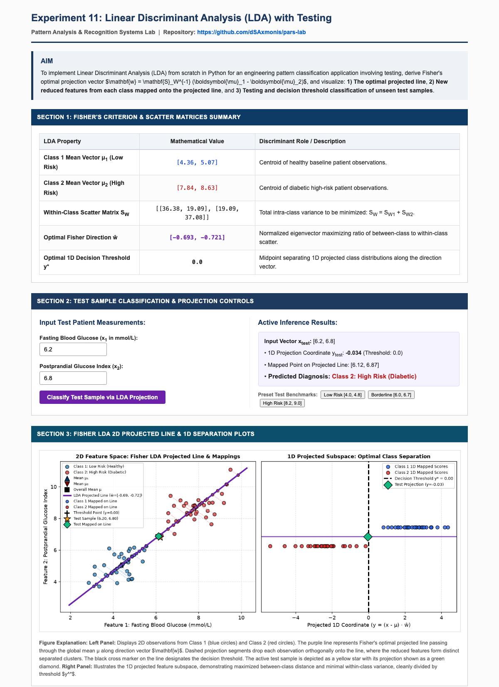

Practical File Submission — Academic Session
Implementation of Linear Discriminant Analysis (LDA) with Projected Line, Reduced Feature Mapping, and Testing
To implement Linear Discriminant Analysis (LDA) from scratch in Python for an engineering pattern classification application involving test sample evaluation, derive Fisher's optimal projection vector $\mathbf{w} = \mathbf{S}_W^{-1} (\boldsymbol{\mu}_1 - \boldsymbol{\mu}_2)$, and visualize: 1) The optimal projected line, 2) New reduced features from each class mapped onto the projected line, and 3) Testing and decision threshold classification of unseen test samples.
Unlike PCA which maximizes total variance without considering labels, Linear Discriminant Analysis (LDA) is a supervised dimensionality reduction technique that seeks a projection direction $\mathbf{w}$ maximizing class separability while minimizing intra-class variance:
Maximizing Rayleigh's quotient yields the closed-form Fisher linear discriminant direction:
The projected discriminant axis passes through the overall mean $\boldsymbol{\mu}$ in direction $\hat{\mathbf{w}}$. The projected 1D coordinate of any sample $\mathbf{x}$ and its mapped 2D position on the line are:
Configured exp 11/ environment containing app.py, templates/, and verified dependencies (Flask, NumPy, Matplotlib, SciPy).
Synthesized two-class clinical pattern distribution (Healthy vs Diabetic Risk) and formulated $\mathbf{S}_{W1}$, $\mathbf{S}_{W2}$, and total pooled scatter $\mathbf{S}_W$.
Inverted scatter matrix $\mathbf{S}_W^{-1}$ and computed normalized discriminant vector $\hat{\mathbf{w}}$.
Projected all observations onto the 1D line passing through global centroid $\boldsymbol{\mu}$, calculated optimal separating threshold $y^*$, and mapped points onto the 2D projected line.
Launched interactive Flask web dashboard on http://127.0.0.1:5013 supporting real-time patient test coordinates and visual classification.
The full-page capture of the deployed Flask web application is embedded below:

GitHub Repository (Clickable):
Direct Source Code Files:
In this experiment, Linear Discriminant Analysis was implemented from first principles in Python. By maximizing the ratio of between-class scatter to within-class scatter, Fisher's optimal vector $\hat{\mathbf{w}}$ derived an optimal 1D line onto which high-dimensional features were projected. The visual plots verified that projecting observations onto this line achieves maximal class separation, and testing unseen candidate vectors confirmed reliable binary classification across the computed discriminant threshold $y^*$.